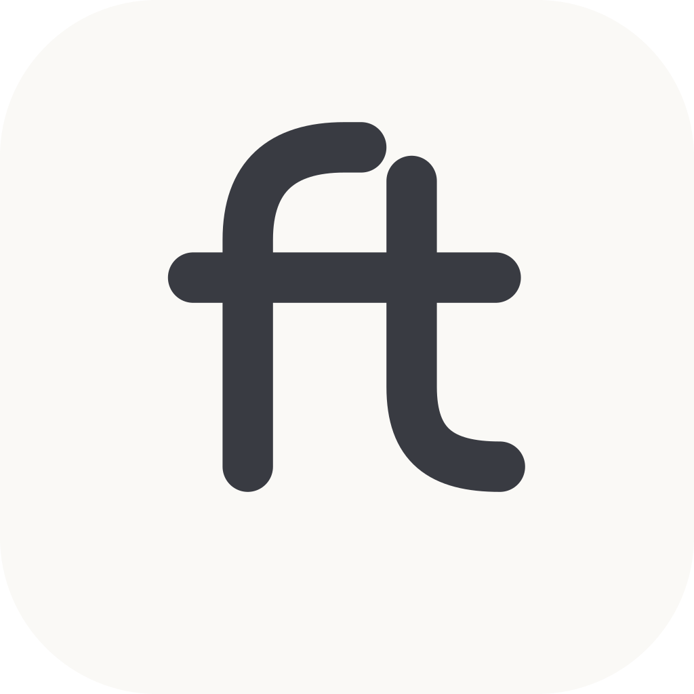

소개팅에도
내 편이 필요해.
나를 알아가는 개인 소개 매니저, 애프터.
단정함에 작은 위트를 더한 로고와 여섯 가지
홍보 콘텐츠입니다.
어떤 애프터가 더 끌리나요?
로고를 고르면 아래 게시물도 함께 바뀝니다.



세 가지 모두 시안입니다. 앱의 로고와 매니저 캐릭터는 아직 변경하지 않았습니다.
같은 브랜드, 다른 이야기.
피드 1080×1350 · 스토리 1080×1920
실제 회원 사진·후기·성공률을 사용하지 않았습니다. 가상 대화와 프로필은 이미지 안에도 예시로 표시했습니다. 운영에서 꺼진 프로필 코칭·매니저 해설을 다룬 두 게시물은 해당 기능 공개 후 사용하는 시안입니다.